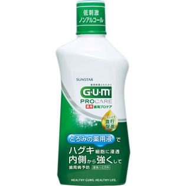

返回列表
产品名称：ガム歯周プロケア リンス

サンスター ガム歯周プロケア リンス ４２０ｍｌ（医薬部外品）
メーカー サンスター
JANコード 4901616010802
商品の特徴
とろみのある薬用液でビタミンＥがハグキに浸透します。
ハグキを内側から強くし歯周病を予防します。
成分・分量
ガム歯周プロケアリンス
用法及び用量
【使用方法】
●計量カップをはずし、本体上部（緑ボタンの端）を押してください。
●本体を傾け胴部を押して、適量約１０ｍＬ（計量カップ半分）を注ぎます。
●お口に含み、２０秒ほどすすいで行き渡らせた後、ブラッシングしてください。
※使用後は緑ボタンを押して閉じてください。